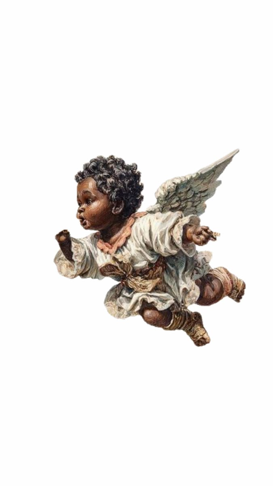
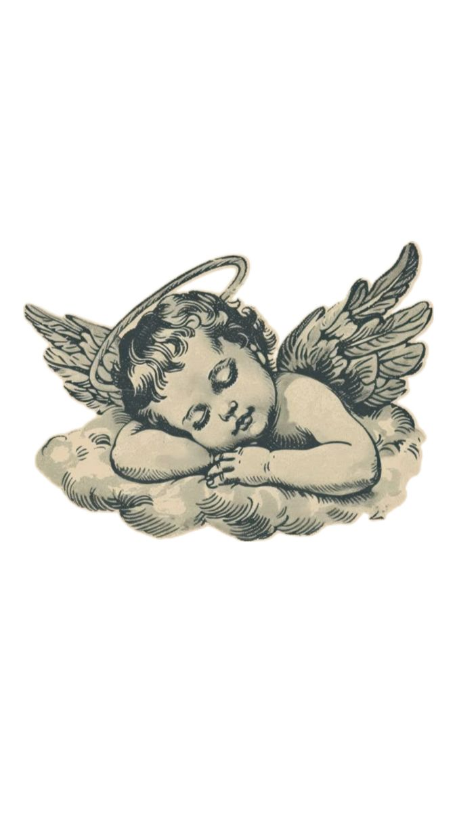

Hey, Djéneba
Je n'ai jamais été très fort pour dire les choses en face, alors j'ai fait une page.

Tu es radieuse, rayonnante… tu illumines tout sur ton passage.
Tu es le tournesol plein d'éclat au soleil : le monde se tourne vers toi, et
moi aussi 🌻
Est-ce que tu veux sortir avec moi ?
